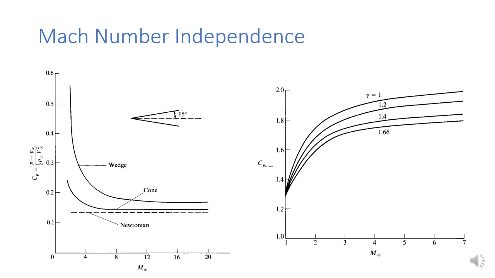
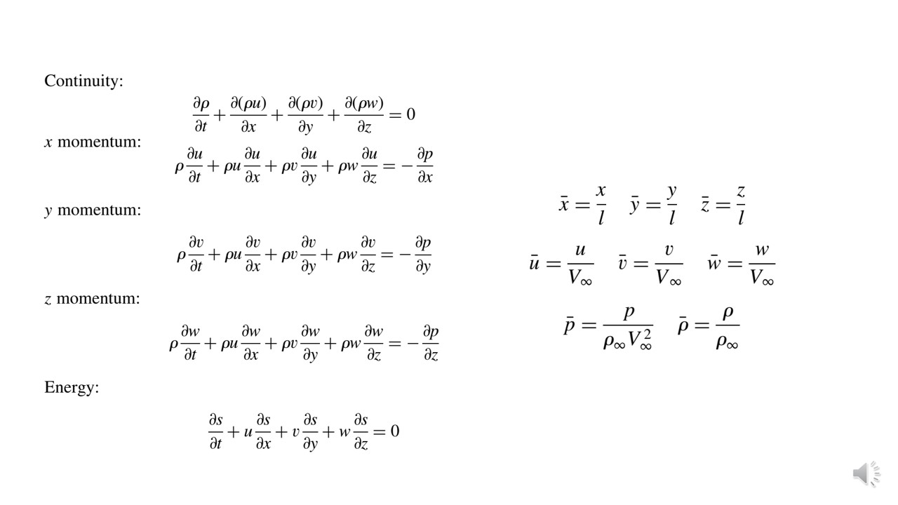
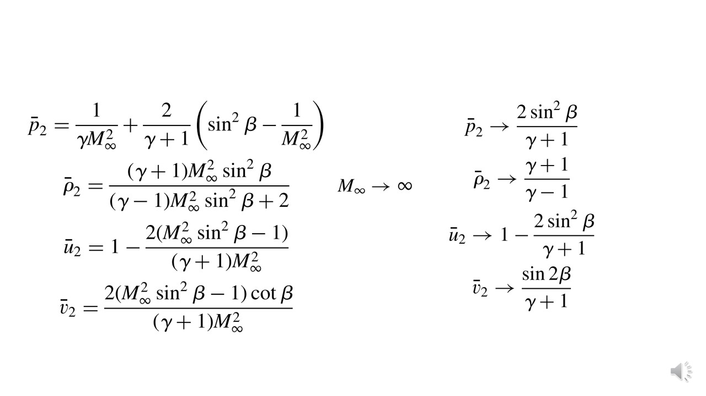

Go Back
Lecture 5 : Approximate Methods - Mach Number Independence Principle
We have discussed about local surface inclination methods. If we are interested to know whats happening to the entire flow feild (not just around the body), the we will have to solve some governign equation around entire doiam of the flow field.
And these eqaution could be obtained froim making some approximation and assumption. Hypersonic computation wasnt common earlier, and expreiemnt were expensive, so analytical method were the only way to anaysis hypersonic flows.
Governing equations

-
Consider a hypersonic flow, over any geometry configuration. If we wanted to know the solution, we will have to solve a system of concervation law equation.
Concervation of mass, energy, and newton's second law. Here we are considering invicid flow with no body forces and no heat additon, so isentropic flows.
With this assumption we will, be able to approximate the solution.
-
The energy eqaution is written in terms of entropy. Since w eare considering invicid flow with no heat additon, the energy eqaution could be very concisly wirtten as \(\frac{Ds}{Dt} = 0\).
If the entproy is constant then from the isentropic relation we can also write the \(\frac{P}{\rho^{\gamma}} = Constant\). And this could be substitued in place of entropy \(S\), and could be written.
These set of equations are called Euler Equation.
-
Once the boundarey conditions are known, we could use these eqaution for solving the flow problem.
Mach Number Independence

-
When discussing about the Newtonian flows, we have talked about this plot. Where in we have seen how good is newtonian method for calculating the Cone and Wedge under hypersonic flow compared to modified newtonian method.
And in that we have also mentioned that the value of coeffienct of pressure kind of saturates at some \(C_p\) at high mach number in case of modified Newtonian law.
-
With increase in amch numbner, the \(C_p\) decreases. Beyond certain mach number the \(C_p\) value approaches platue and after that \(C_p\) becomes independent of mach number.
This is what we call Mach number Independence. Mach wave patterns and Shcok waves shapes, and many other paramter alomoist becomes independent of mach number. And this happens in case of high mach numbers.
-
However the newtonian model will always remain constant.
Non dimensionalising Governing Equation

Non Dimensionalizing Governing equation

-
Upon Non-dimensionalising the governing equation with the given non-dimensioanal variables, we would get the above equations. They will get transformed.
And the boundary conditon is no penetration condition. \(n_x,n_y,n_z\) are just components of normal vector to the surface of body (Directional Cosines in X,Y and Z direction).
Oblique Shock Relations

-
For an external flow over a hypersonic body, the region of interest to us is region of shock layer. The shock layer in the baove case is
boundaed by body surface, and we know the B.C at that edge. Which is no penetration condition. However the boundary condition at the other side of the shock layer
is given by the oblique shock relations, which are listed out here.
-
And we see that LHS are already in appropriate non dimensional form. (Excpet for the case of pressure). So to make the pressure also in the appropriate non dimensioanl form, we do the folowing:
We use the state law of ags, as shown in the bottom part of the image, and we could see that \(p_{infty}) could be written in terms of \(M_{infty}\).
Silde 7

After substituing the above mentioed pressure in the oblique shock relation we have obtained the following results.
-
Applying the high mach number conditions on the above realtion, we will end up getting this relations as shown at the right side of the slides
-
Now we have the boundary conditon at the surface and boundary conditon at the shock wave and governign eqaution all in non dimensional form. Now using thises things we could get the solution of the flow feild inside the shock layer.
Silde 9

-
On the other hand, let us apply the high mach numnber at the boundary condition now, and we see that none of the eqaution is dependent on mach number. And this meansthe solution of hypersonic flow is independent of mach number.
Solution is mach number independent. So any quantity that is derived from these solution using pressure, velocity will be mach number independent (like \(C_p\)).
This brings us to the start of the lectures.
Slide 10

-
The variation of Coefficient of Drag is plotted with various Mach Number. We see that with increase in mach number, the drag coefficient acheives a platue. and this means the mach number independence is acheived.
However the mach number independence is acheived much earlier in sphere compared to cone.
This was some what expected since in the case of blunt bodies, the value of \(\beta\) is larger. And therefore mach number independence is acheived at lower mach number. And opposite is the case with slender bodies.
-
Note that it is the non dimensional quanties that are becoming mach number independent, and not the quantities itself. With increase in amch number the pressure also approaches infinity, even thougb \(c_p\) becomes constant.